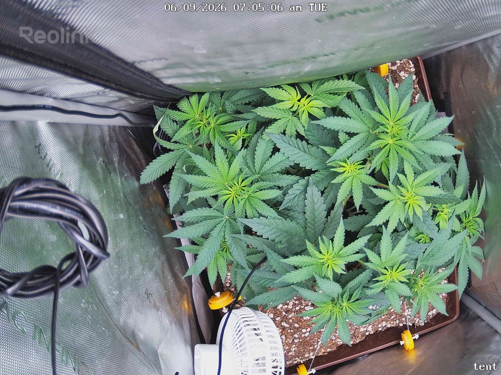

← All reports
Jun 9, 2026
Tue Jun 9, 2026 — 7:05 AM

Prognosis
Daily check-in — 2026-06-09 (Day 6 of 12/12)
- Growth: Visible vertical push and canopy fill vs yesterday. Several brighter lime-green shoots in the center and along trained branches — classic early-flower stretch kicking in.
- Structure: LST is paying off — canopy is wide, even, and well-spread across the pot. Multiple distinct tops jockeying for the light, no single dominant cola yet. Good bud-site distribution.
- Color/posture: Healthy mid-deep green across mature fans, no clawing, no taco, no edge burn. Leaves flat, slight prayer in the newer growth = happy.
- Stress signs: None. No yellowing, no spots, no pests visible, soil surface looks appropriately dry on top (consistent with watering June 7).
- Phase check: Day 6 of flip, ~6 weeks from germ. Right on schedule — you're in the "stretch" window (typically days 7–21 of 12/12), expect 1.5–2x height gain over the next two weeks. Pre-flowers / pistils should start showing at nodes within 3–7 days.
- Light ramp: Confirmed at 600 PPFD and plant is unbothered. You can bump to 650–700 over the next 5–7 days as stretch slows. Once buds set and stack (~day 21+), push to 750–850 PPFD — SF-2000 Pro in a 2x2 can deliver that comfortably. Watch for tip-bleach on the tallest cola tips as your ceiling indicator.
- Bud site estimate: I count roughly 10–14 viable main bud sites from this angle (tops + strong secondaries from the LST). Realistic dry yield for a well-run 2x2 single-plant flower under SF-2000 Pro at this training level: ~2–3.5 oz (55–100g). Could push higher with aggressive defoliation + clean finish.
- Watering: ~2 days since last 1-gal bottom feed. Hold another 1–2 days; check pot weight before next water. Stretch increases uptake so you may shorten the cycle to ~3 days soon.
- Next actions: No action needed today. Keep monitoring for first pistils, and start thinking about light ramp + a light defoliation pass around day 14–18 if interior shading gets heavy.
Overall: textbook early-flower transition — healthy, well-trained, on-track for a solid harvest around early August.